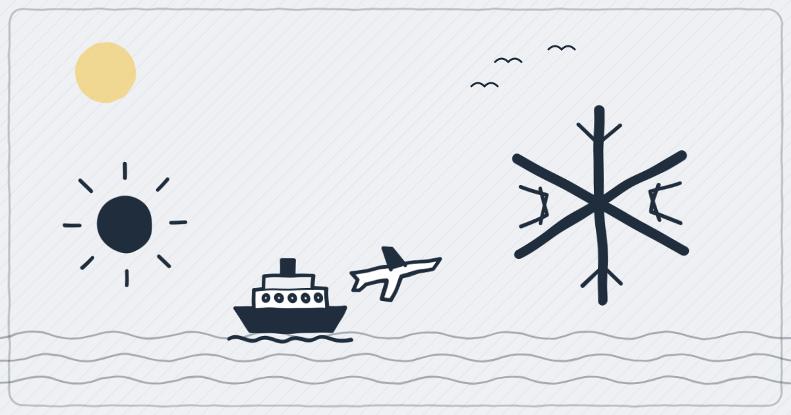

Where to Cruise in January From Canada: Warm Picks

Go south. In January the Caribbean, the Bahamas, the Mexican Riviera and the Panama Canal are all dry, warm and past the Christmas price peak. Alaska and northern Europe are shut. Eastern Canadians reach Florida ports most easily; the Mexican Riviera from Los Angeles suits the West. Fly in a day early, because a Canadian January delays planes.
In January, the best cruises from Canada all point south: the Caribbean and the Bahamas from Florida, the Mexican Riviera from Los Angeles, and the Panama Canal for anyone with two weeks or more. All three are in their dry season, and fares ease the moment the holiday crowds go home. The only hard part is the flight out, so build in a buffer night.
Where is warm enough to cruise in January?
The map is simple. Anything in the tropics is open and at its driest; anything north of about Florida is closed or cold.
| Region | Sails from | January weather | Who it suits |
|---|---|---|---|
| Eastern and southern Caribbean | Fort Lauderdale, Miami, San Juan | 26–30°C, dry, calm seas | Anyone who wants guaranteed sun; the south is the warmest |
| Western Caribbean | Miami, Tampa, Galveston, New Orleans | 25–28°C, occasional cool front | Beach and ruins, shorter flights from central Canada via Houston or Dallas |
| Bahamas short cruises | Florida ports | 22–26°C, a cool day possible | Three to five nights, a quick escape without a week off |
| Mexican Riviera | Los Angeles, San Diego | 24–28°C, dry | Western Canadians; Cabo, Mazatlán and Puerto Vallarta |
| Panama Canal | Fort Lauderdale, Miami, Los Angeles, San Diego | Panama's dry season | Retirees and anyone with 10 to 21 nights to spend |
| Hawaii from the mainland | Los Angeles, San Diego, San Francisco | 24–27°C, some showers | Two weeks, five sea days each way |
Alaska is out: the ships leave Vancouver and Seattle from roughly late April to late September. Europe's river ships are laid up after the Christmas markets, and the Mediterranean is cool and partly closed. A Canary Islands or Dubai cruise is possible, but the flight from Canada is a long way for a week of 20°C.
Why does a cruise get cheaper after the first week of January?
Schools. Canadian and US families fill the ships from around 20 December to the first weekend of January, and lines price accordingly. Once classes resume, demand drops and the same cabins are suddenly much cheaper. At recent prices, a seven-night Caribbean balcony that sells for US$2,000–3,000 a person over New Year can go for US$1,000–1,600 three weeks later, roughly C$1,400–2,300.
Two other things happen in January that work in your favour if you have time:
- World cruises leave. Holland America's Volendam sails a 129-day world voyage from Fort Lauderdale on 5 January 2027, and Princess's Coral Princess leaves the same port on 6 January; both sell segments. Cunard's Queen Anne leaves Fort Lauderdale on 22 January 2027 on a world voyage with a 17-night leg to Rio de Janeiro listed from about US$2,700 a person, and longer segments beyond. A segment is a long, port-rich cruise at a per-night price that is often lower than a week in the Caribbean.
- Ships reposition. Some lines move ships between Florida, the Panama Canal and the west coast in January, and a repositioning fare for a 10- to 16-night sailing can be the best per-night value of the year.
Fares are only half the bill. The Canadian dollar has sat around 1.40 to 1.43 to the US dollar this winter, so a US-priced fare costs more in loonies than it did a few years ago; how the exchange rate changes a cruise price for Canadians shows how to budget for it.
What is the easiest warm cruise to reach from each part of Canada?
The right region in January is partly about the flight, because a Canadian winter punishes connections.
- Ontario and Quebec: Florida. Toronto and Montreal both have nonstops to Fort Lauderdale, Miami and Orlando, and the flight is about three and a half hours. Fort Lauderdale is the easiest port to use because the airport is beside it; the Montreal-to-Florida port guide and flying Toronto to Miami for a cruise cover the details.
- Atlantic Canada: Florida again, usually through Toronto or Montreal, which is why Halifax cruisers should allow two days rather than one.
- Manitoba and Saskatchewan: the western Caribbean through a US hub, or Los Angeles for the Mexican Riviera. Nonstops to sun ports from Winnipeg are thin, so compare both routings.
- Alberta and British Columbia: the Mexican Riviera. Los Angeles is a three-hour flight from Vancouver or Calgary, and a round trip from there takes seven nights with no connection at the far end. For winter 2026-27, WestJet dropped its Vancouver–Los Angeles flights and Delta picked the route up, while Air Canada continues to fly it; check who is operating before you assume a schedule.
Panama Canal cruises are reachable from either coast, which is part of their appeal; what a Panama Canal cruise costs from Canada compares the Florida and Vancouver options.
How do you get to the ship through a Canadian January?
Treat the flight as the risk, not the sea. Freezing rain in Toronto and Montreal, blizzards on the Prairies and de-icing queues everywhere make January one of the worst months for on-time departures from Canadian airports, and a ship leaves at the printed hour whether you are on it or not.
The plan that works is the one that costs a hotel night:
- fly the day before sailing, and two days before if you have a connection
- take the earliest flight of the day, so a cancellation still leaves afternoon options
- carry a day's clothes and all medication in your hand luggage
- choose cruise line air or a fully flexible fare if your route has only one flight a day
- buy insurance with trip delay and missed connection cover on the day you book
If a storm closes the airport and you miss the ship anyway, insurance is what gets the fare back; cruise insurance for Canadians explains which policies cover a missed departure and which quietly do not.
Is January a good time to book a cruise for later in the year?
Yes, and that is the other reason January matters. Wave season, the cruise industry's biggest selling period, runs from early January to about the end of March. Lines compete with onboard credit, reduced deposits, free or discounted drink and wifi packages, and third- and fourth-guest deals. The offers are strongest on sailings six to twelve months out.
For Canadians that mostly means two things. If you want a summer Alaska cruise, especially in school holidays, the pick of cabins is available in January and the deposit is often smaller than usual. If you want next winter's Caribbean, January is when the following year's sailings are fully open and priced.
Book on a fare that can be repriced before final payment, buy the insurance at deposit, and keep an eye on the price into March. If a better promotion appears on the same sailing, ask for it. Lines will usually apply a new promotion before final payment, but rarely after.
Want this checked for your own sailing? A licensed cruise consultant can price it up and answer questions for free, with no obligation.
Ask a cruise expert →The January pick, region by region
From Toronto, Montreal or Halifax, take a seven-night eastern or southern Caribbean from Fort Lauderdale in the second half of the month and fly down the day before; the Toronto to Fort Lauderdale flight and port guide has the airlines and costs. From Calgary or Vancouver, take the Mexican Riviera from Los Angeles for the shortest flight and the simplest logistics, and if you drive to YYC, leave the winter coats in the parked car. With two or three weeks and no fixed dates, look at a Panama Canal transit or a world-cruise segment leaving Florida in the first week of January. And whichever you choose, use the same month to book the summer sailing while the wave season offers are on the table.
Questions people also ask
Is January a cheap month to cruise from Canada?
The second half is. Fares peak from about 20 December to the first days of January, then fall once schools reopen. Mid-to-late January often buys the same ship and the same weather for well under the holiday price, though the flight from Canada stays expensive if you book late.
Can you cruise to Alaska in January?
No. The Alaska season runs from roughly late April or early May to late September, so a January search only turns up the coming summer. January is a good month to book Alaska, because wave season promotions are running, but not to sail it.
What is the warmest cruise region in January?
The southern Caribbean, with Aruba, Curaçao and Barbados sitting near 28 to 30°C and outside the hurricane belt. The eastern and western Caribbean and the Mexican Riviera are a degree or two cooler and just as dry. The Bahamas can see the odd cool front in January.